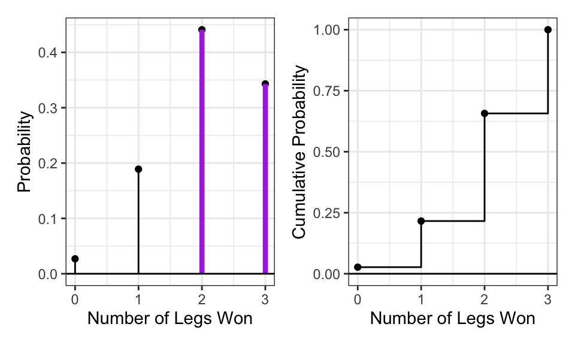
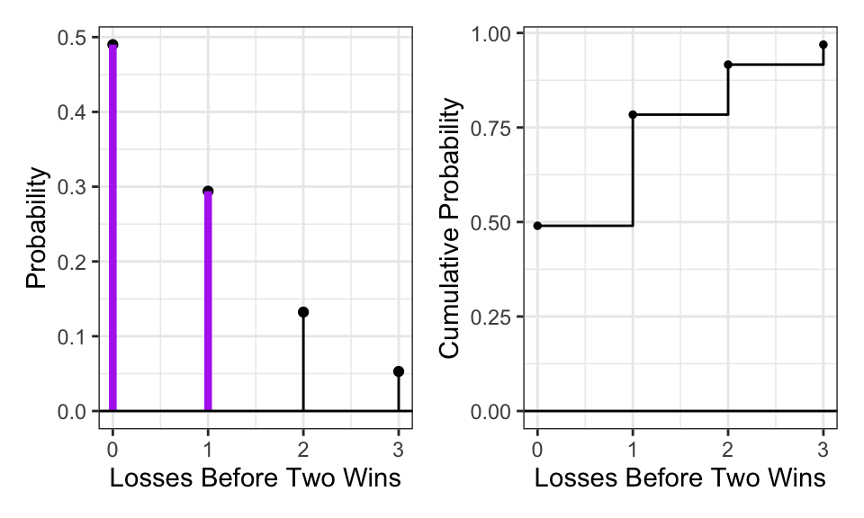
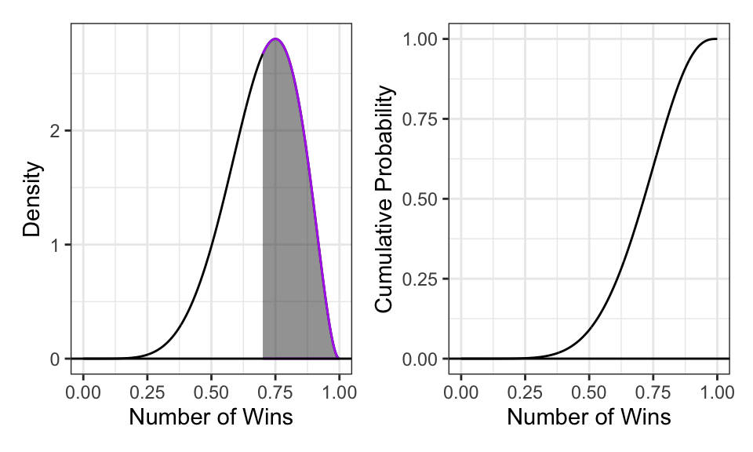
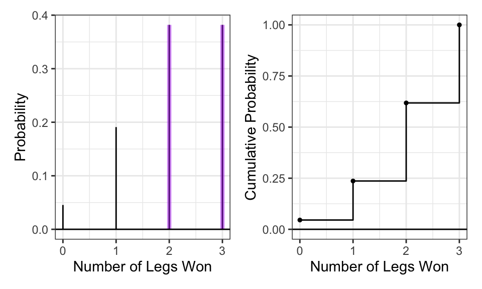
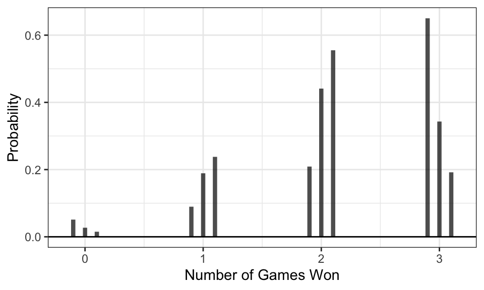
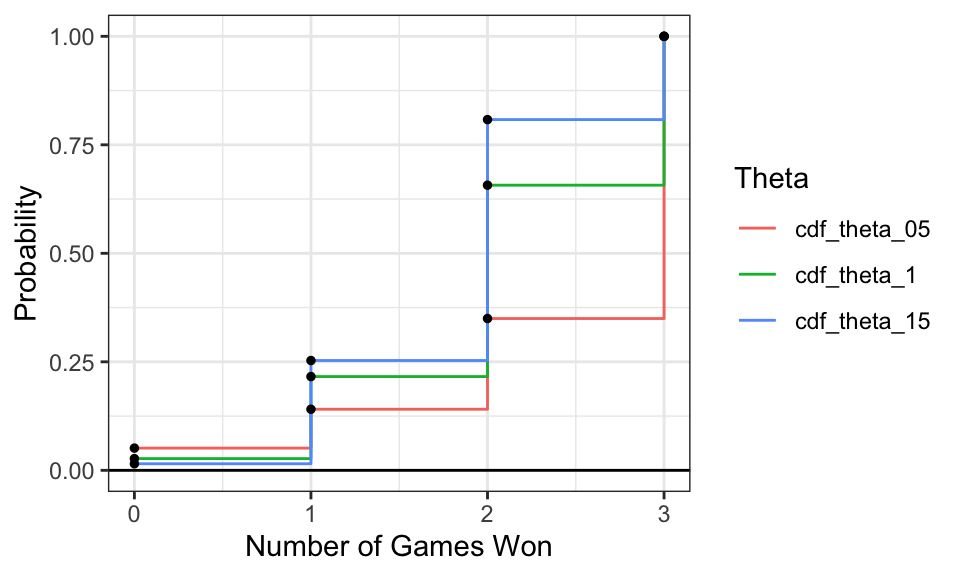
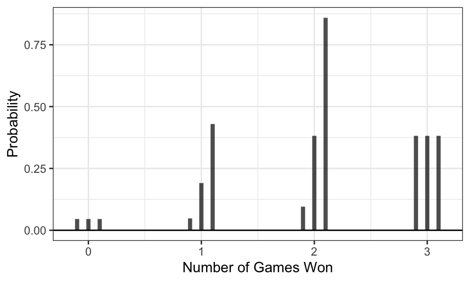
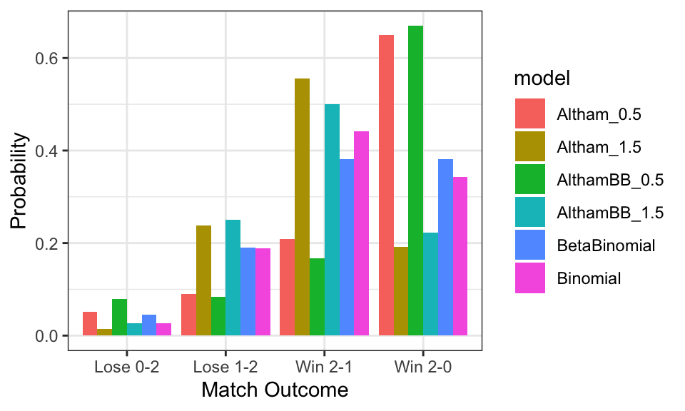

Complete the tasks below. Make sure to start your solutions in on a new line that starts with “Solution:”.
Make sure to use the Quarto Cheatsheet. This will make completing and writing up the lab much easier.
Make sure to use “enter” to make your code readable, so it doesn’t run off the page. I switched the Quarto document to automatically render to .pdf, so you can see what you’re submitting by default. You can switch back for the highlighting by moving the html block above the pdf block in the YAML header.
Don’t forget that you can copy-and-paste code when you’re doing something similar as we did in class!
Make sure to plot all computed probabilities. This is good ggplot practice AND will help make sure you don’t make a mistake when computing the probability.
1 The Binomial and Negative Binomial Distributions
1.1 The Binomial Distribution
In many introductory courses, we make the simplifying assumption of independence in Bernoulli trials. For example, when playing best two-out-of-three legs in a darts match, we would assume Player A has an 70% chance of winning each leg. We write: \[X \sim \text{Binomial}(n=3, p=0.70)\] where
\(X\) is the number of legs won
\(n\) is the number of trials
\(p\) is the probability of the event of interest
Of note, it is not necessarily the case that the players play all three legs – if either player wins legs one and two the match ends.
There are eight possible outcomes for Player A:
(win, win, “win”) \(\longrightarrow\) Player A wins
(win, win, “lose”) \(\longrightarrow\) Player A wins
(win, lose, win) \(\longrightarrow\) Player A wins
(win, lose, lose) \(\longrightarrow\) Player A loses
(lose, win, win) \(\longrightarrow\) Player A wins
(lose, win, lose) \(\longrightarrow\) Player A loses
(lose, lose, “win”) \(\longrightarrow\) Player A loses
(lose, lose, “lose”) \(\longrightarrow\) Player A loses
Note: I use quotations above to denote outcomes where the last match isn’t actually played.
Use the Binomial distribution to compute the probability that Player A wins the match. Make sure write out your probability statement and work to write it in terms of the distribution function (PMF/CDF) to plot the probability using ggplot.
Solution
Code
n =3p =0.70#define parametersggdat =tibble(x =0:3,PMF =dbinom(x, n, p),CDF =pbinom(x, n, p)) #plot PMF and CDFPMF.plot =ggplot(ggdat) +geom_linerange(aes(x = x, ymin =0, ymax = PMF)) +geom_point(aes(x = x, y = PMF)) +geom_linerange(data = ggdat |>filter(x >=2),aes(x = x, ymin =0, ymax = PMF),color ="darkorchid2", linewidth =1.5) +geom_hline(yintercept =0) +theme_bw() +labs(x ="Number of Legs Won", y ="Probability")CDF.plot =ggplot(ggdat) +geom_step(aes(x = x, y = CDF)) +geom_point(aes(x = x, y = CDF)) +geom_hline(yintercept =0) +theme_bw() +labs(x ="Number of Legs Won", y ="Cumulative Probability") PMF.plot | CDF.plot #plot PMF and CDF side by side
Figure 1: The Binomial Distribution with n = 3, p = 0.70

Probability
Code
1-pbinom(1, size =3, prob =0.7) #Probability that X>=2
[1] 0.784
Probability statement: \(P(win)=P(X≥2)=P(X=2)+P(X=3)\), this can also be written as: \(P(X≥2)=1−P(X≤1)\).
1.2 The Negative Binomial Distribution
In intermediate courses, we learn the Negative Binomial distribution that we use to model the number of “failures” until the \(r\)th success. Note that this approach still makes the simplifying assumption of independence in Bernoulli trials.
Specify the two cases necessary to compute the probability. Fully explain these probability statements in the context of a best two-out-of-three match and the Negative Binomial distribution. Finally, compute the probability that Player A wins the match and show you get the same result as the Binomial approach. Make sure write out your probability statement and work to write it in terms of the distribution function (PMF/CDF) to plot the probability using ggplot.
Solution
Code
r =2p =0.7#define parametersggdat =tibble(x =0:3) |>mutate(PMF =dnbinom(x, size=r, prob=p),CDF =pnbinom(x, size=r, prob=p)) #compute PMF and CDFPMF.plot =ggplot(ggdat) +geom_linerange(aes(x = x, ymin =0, ymax = PMF)) +geom_point(aes(x = x, y = PMF)) +geom_linerange(data = ggdat |>filter(x <=1),aes(x = x, ymin =0, ymax = PMF),color ="darkorchid2", linewidth =1.5) +geom_hline(yintercept =0) +theme_bw() +labs(x ="Losses Before Two Wins", y ="Probability")CDF.plot =ggplot(ggdat) +geom_step(aes(x = x, y = CDF)) +geom_point(aes(x = x, y = CDF), size =1) +geom_hline(yintercept =0) +theme_bw() +labs(x ="Losses Before Two Wins", y ="Cumulative Probability") PMF.plot | CDF.plot #plot PMF and CDF side by side
Figure 2: The Negative Binomial Distribution with r = 2, p = 0.70

Probability
Code
pnbinom(1, size =2, prob =0.7) #Probability that X<=1
[1] 0.784
Probability statement: \(P(X≤1)=P(X=0)+P(X=1)\) The probability using the Binomial and Negative Binomial Distributions is the same. The Binomial Distribution measures how many wins occur in a given number of trials (3 trials), and looks for outcomes where at least 2 wins occur (won the match). The Negative Binomial Distribution goes from the opposite direction, and measures the number of losses before the desired event occurs (a win). \(r=2\) because Player A must achieve 2 total wins to win the match.
2 The Beta Binomial Distribution
One approach to generalize this modeling is to use a Beta-Binomial distribution. This distribution arrises when we let \(p\) be a random variable that follows a Beta distribution: \[\begin{align*}
P &\sim \text{Beta}(\alpha, \beta)\\
X &\sim \text{Binomial}(n, P).
\end{align*}\] This distribution is not part of base R, but is available using the _bbinom functions from the extraDistr package (Wolodzko 2026).
The primary benefit is that the Beta-Binomial enables us to specify some uncertainty about the skill of Player A, as \(p\) does not have to be fixed (e.g., \(p=0.70\)). Suppose the result of the best two-out-of-three match follows a Beta-Binomial distribution where \(\alpha=7\) and \(\beta=3\).
2.1 The Beta Part
Plot the corresponding Beta distribution. Interpret the plot in the context of a best two-out-of-three match and the Binomial distribution. Hint: The Beta distribution is available in base R via _beta().
Solution
Code
alpha =7beta =3#define parametersggdat =tibble(x =seq(0, 1, length.out =1000)) |>mutate(PDF =dbeta(x, shape1 = alpha, shape2 = beta), CDF =pbeta(x, shape1 = alpha, shape2 = beta)) #compute PDF and CDFPDF.plot =ggplot() +geom_line(data = ggdat,aes(x = x, y = PDF)) +geom_ribbon(data=ggdat |>filter(x >=0.7), #p is around 0.7, beta distribution allows for uncertaintyaes(x = x, ymin =0, ymax = PDF),color ="darkorchid2", alpha =0.5) +geom_hline(yintercept =0) +theme_bw() +labs(x ="Number of Wins", y ="Density")CDF.plot =ggplot() +geom_line(data = ggdat,aes(x = x, y = CDF)) +geom_hline(yintercept =0) +theme_bw() +labs(x ="Number of Wins", y ="Cumulative Probability")PDF.plot | CDF.plot #plot PDF and CDF side by side
Figure 3: The Beta Distribution with alpha = 7, beta = 3

The Beta distribution shows us how likely different win probabilities, p, are for Player A. Most of the density is near 0.7, reflecting our belief from the Binomial example. The Beta distribution is helpful because it allows for uncertainty and variation in p, and wider view of Player A’s performance.
How does the Beta incorporate uncertainty about the skill of Player A? Compute the mean and variance of the distribution. Hint: You will find the integrate(...) function helpful here. \[\begin{align*}
E(P) &= \mu_P = \int_{0}^1 p f_P(p) dp\\
var(P) &= \sigma^2_P = \int_{0}^1 (p-\mu_P)^2 f_P(p) dp\\
\end{align*}\]
What is the probability that Player A has a win probability of exactly 0.70? Make sure write out your probability statement and work to write it in terms of the distribution function (PDF/CDF) to plot the probability using ggplot. Hint: Think carefully about the properties of continuous distributions here.
Solution
Code
dbeta(0.7, shape1 =7, shape2 =3)
[1] 2.668279
This value represents the height of the probability density function at \(p=0.70\), not the probability itself. For continuous distributions, the probability at any single point is zero, even though the density at that point may be positive.
What is the probability that Player A has a win probability of at least 0.50? Make sure write out your probability statement and work to write it in terms of the distribution function (PDF/CDF) to plot the probability using ggplot.
Solution
Code
alpha =7beta =31-pbeta(q=0.50, shape1 = alpha, shape2 = beta) #Probability of at least 0.50
[1] 0.9101562
Probability statement: \(P(P≥0.50)=1−P(P≤0.50)=1−F(0.50)\)
What is the 90th percentile of Player A’s win probability based on this Beta distribution? Make sure write out your probability statement and work to write it in terms of the distribution function (PDF/CDF) to plot the percentile using ggplot.
Compute the probability that Player A wins the match. Compare your result to the Binomial and Negative Binomial results. Make sure write out your probability statement and work to write it in terms of the distribution function (PMF/CDF) to plot the probability using ggplot
Solution
Code
library(extraDistr) #download then load libraryn =3alpha =7beta =3#define parametersggdat =tibble(x =0:n,PMF =dbbinom(x, size = n, alpha = alpha, beta = beta),CDF =pbbinom(x, size = n, alpha = alpha, beta = beta)) #calculate PMF and CDFPMF.plot =ggplot(ggdat) +geom_linerange(aes(x = x, ymin =0, ymax = PMF)) +geom_linerange(data = ggdat |>filter(x >=2),aes(x = x, ymin =0, ymax = PMF),color ="darkorchid2", linewidth =1.5, alpha =0.5) +geom_hline(yintercept =0) +theme_bw() +labs(x ="Number of Legs Won", y ="Probability")CDF.plot =ggplot(ggdat) +geom_step(aes(x = x, y = CDF)) +geom_point(aes(x = x, y = CDF), size =1) +geom_hline(yintercept =0) +theme_bw() +labs(x ="Number of Legs Won", y ="Cumulative Probability")PMF.plot | CDF.plot #plot PMF and CDF side by side
Figure 4: The Beta Binomial Distribution with alpha = 7, beta = 3

Probability
Code
n =3alpha =7beta =3#define parameters1-pbbinom(1, size = n, alpha = alpha, beta = beta) #calculate probability player a wins using CDF
[1] 0.7636364
Probability statement: \(P(X≥2)=1−P(X≤1)=1−F(1)\) The result, \(0.76\) is a bit smaller than the result using the Binomial and Negative Binomial distributions (\(0.78\)), but very similar. This is because the Beta-Binomial incorporates uncertainty in Player A’s ability.
2.3 The Why
Check the expected value and variance of each distribution.
For each distribution, compute the mean number of legs won for player A. Hint: You can perform the sum over the finite support set here. \[\begin{align*}
E(X) = \mu_X &= \sum_{i=0}^3 i f_X(i)\\
var(X) = \sigma_X &= \sum_{i=0}^3 (i-\mu_X) f_X(i)
\end{align*}\]
3 Altham’s Multiplicative Binomial Distribution
While the Beta-Binomial enables us to model cases where winning has a clustering effect (e.g., a “hot hand”).
3.1 Probability Mass Function
The mass function for this distribution is below. While it used to be available in the MBD package for R, this package is no longer available. \[f_X(x) = \frac{1}{c} {n \choose x} p^x (1-p)^{n-x} \theta^{x(n-x)}I(x \in \{0, 1, ..., n\})\] where \[c = \sum_{i=0}^n {n \choose i} p^i (1-p)^{n-i} \theta^{i(n-i)}\]
Write a function in R called daltbinom() for computing the PMF of this distribution. Use your function to plot the distribution where \(p=0.70\) where \(\theta=0.50\), \(\theta=1\), and \(\theta=1.50\). Comment on the differences in the context of a best two-out-of-three match
ggdat =tibble(x =0:3,pmf_theta_05 =daltbinom(x, n =3, p =0.7, theta =0.5),pmf_theta_1 =daltbinom(x, n =3, p =0.7, theta =1),pmf_theta_15 =daltbinom(x, n =3, p =0.7, theta =1.5) #calculate the PMF at each value of theta)ggdat_long = ggdat |>pivot_longer(cols =starts_with("pmf"),names_to ="theta",values_to ="PMF") #edit the tibblePMF.plot =ggplot(ggdat_long) +geom_linerange(aes(x = x, ymin =0, ymax = PMF, fill = theta), position =position_dodge(width =0.3),linewidth =1.5, alpha =0.7) +geom_hline(yintercept =0) +theme_bw() +labs(x ="Number of Games Won",y ="Probability",color ="Theta")print(PMF.plot) #plot the PMF with each value of theta as a different color
Figure 5: PMF of Altham’s Multiplicative Binomial Distribution with p = 0.7

As theta changes, certain outcomes become more or less likely in a best 2 out of 3 match. A theta under 1 (0.5), favors more extreme options, which is why you see more observations of 3 wins and a few of 1 wins. When theta is 1, the outcomes are more evenly distributed because each game is being interpreted individually and has the same probability of winning. When theta is 1.5, it favors more moderate outcomes (2-1 or 1-2), which is why these results are more concentrated in the middle.
3.2 Cumulative Distribution Function
Use your daltbinom() function to create a paltbinom() function for computing the CDF of this distribution. Use your function to plot the distribution where \(p=0.70\) where \(\theta=0.50\), \(\theta=1\), and \(\theta=1.50\).
Solution
Code
paltbinom =function(x, n, p, theta){ k_vals =0:n #create object k_vals to make more concise pdf_vals =daltbinom(k_vals, n, p, theta) cdf =cumsum(pdf_vals)#cdf calculation is based on the pdfreturn(cdf[x+1]) #n doesn't start at 0}
Code
ggdat =tibble(x =0:3,cdf_theta_05 =paltbinom(x, n =3, p =0.7, theta =0.5),cdf_theta_1 =paltbinom(x, n =3, p =0.7, theta =1),cdf_theta_15 =paltbinom(x, n =3, p =0.7, theta =1.5) #calculate the CDF at each value of theta)ggdat_long = ggdat |>pivot_longer(cols =starts_with("cdf"),names_to ="theta",values_to ="CDF") #edit the tibbleCDF.plot =ggplot(ggdat_long) +geom_step(aes(x = x, y = CDF, color = theta)) +geom_point(aes(x = x, y = CDF), size =1) +geom_hline(yintercept =0) +theme_bw() +labs(x ="Number of Games Won",y ="Probability",color ="Theta")print(CDF.plot) #plot the CDF with each value of theta as a different color
Figure 6: CDF of Altham’s Multiplicative Binomial Distribution with p = 0.7

3.3 The Winning Probability
Compute the probability that Player A wins the match using Altham’s Multiplicative Binomial Distribution. Compare your result to the Binomial and Negative Binomial results. Compare your results to the Beta-Binomial model, too. Make sure write out your probability statement and work to write it in terms of the distribution function (PMF/CDF) to plot the probability using ggplot.
Solution
Code
(p_win_05 =1-paltbinom(1, n =3, p =0.7, theta =0.5))
[1] 0.8592417
Code
(p_win_1 =1-paltbinom(1, n =3, p =0.7, theta =1))
[1] 0.784
Code
(p_win_15 =1-paltbinom(1, n =3, p =0.7, theta =1.5)) #compute the probabilities of winning with each different value of theta
[1] 0.746993
Probability statements: 1. \(P(X≥2∣θ=0.5)=1−P(X≤1∣θ=0.5)\) 2. \(P(X≥2∣θ=1)=1−F(1;θ=1)\) 3. \(P(X≥2∣θ=1.5)=1−F(1;θ=1.5)\) The probability of Player A winning the match is the same as the Binomial and Negative Binomial results when theta = 1 (0.784), but the probability is higher when theta is 0.5 (= 0.859, is observable also in the graphs). The probability is lower when theta is 1.5 (=0.747, which is also observable in the graphs).
4 Altham’s Multiplicative Beta-Binomial Distribution
You may have wondered – “Can we do the Beta thing with Altham’s version of the Binomial Distribution?” The answer is yes!
4.1 Probability Mass Function
The mass function for this distribution is below. \[f_X(x) = \left[\int_{0}^1 dp
\left(\frac{1}{c} {n \choose x} p^x (1-p)^{n-x} \theta^{x(n-x)}\right)\left(\frac{\Gamma(\alpha+\beta)}{\Gamma(\alpha)\Gamma(\beta)} p^{\alpha-1}(1-p)^{\beta-1}\right)\right]I(x \in \{0, 1, ..., n\})\]
Write a function in R called daltbbinom() for computing the PMF of this distribution. Use your function to plot the distribution where \(\alpha=7\) and \(\beta=3\) where \(\theta=0.50\), \(\theta=1\), and \(\theta=1.50\). Comment on the differences in the context of a best two-out-of-three match.
Solution
Code
daltbbinom =function(x, n, alpha, beta, theta){ #create functionpmf =sapply(x, function(xi) { #Apply the calculation to each possible outcome xi, returning a vector of PMF values integrand =function(p) {choose(n, xi) * (p^xi) * ((1-p)^(n-xi)) * (theta^(xi*(n-xi))) * (p^(alpha-1) * (1-p)^(beta-1)) *gamma(alpha+beta)/(gamma(alpha)*gamma(beta)) }integrate(integrand, lower=0, upper=1)$value})return(pmf)}
Code
library(extraDistr)n =3alpha =7beta =3#define parametersggdat =tibble(x =0:n, pmf_theta_05 =daltbbinom(x, n, alpha = alpha, beta = beta, theta =0.5),pmf_theta_1 =daltbbinom(x, n, alpha = alpha, beta = beta, theta =1),pmf_theta_15 =daltbbinom(x, n, alpha = alpha, beta = beta, theta =1.5) #calculate the PMF at each value of theta)ggdat_long = ggdat |>pivot_longer(cols =starts_with("pmf"),names_to ="theta",values_to ="PMF") #edit the tibblePMF.plot =ggplot(ggdat_long) +geom_linerange(aes(x = x, ymin =0, ymax = PMF, fill = theta),position =position_dodge(width =0.3),linewidth =1.5, alpha =0.7) +geom_hline(yintercept =0) +theme_bw() +labs(x ="Number of Games Won",y ="Probability",color ="Theta")print(PMF.plot) #plot the PMF, each theta is a different color
Figure 7: PMF of Altham’s Multiplicative Beta-Binomial Distribution with alpha = 7, beta = 3

Hint: You can use the integrate() in R to compute the integral. Note that this requires the function to be vectorized – it should be unless you have added any block conditionals.
5 A Comparison
Compute the probabilities for all outcomes for Player A.
Loses 0-2 (LL”L”, LL”W”)
Loses 1-2 (WLL, LWL)
Wins 2-0 (WW”W”, WW”L”)
Wins 2-1 (LWW, WLW)
Note: You’ll need to define these outcomes in terms of the random variable.
Create a bar plot (or column plot) using ggplot to show the probability of each outcome under the following conditions:
Binomial
Solution
Code
x =0:3n =3p =0.7#define parameters(binom_probs =dbinom(x, size = n, prob = p))
[1] 0.027 0.189 0.441 0.343
0.027 represents LLL, 0.189 represents LLW, LWL, or WLL, 0.441 represents WWL, WLW, or LWW, 0.343 represents WWW
ggplot(df, aes(x = outcome, y = prob, fill = model)) +geom_col(position ="dodge") +theme_bw() +labs(x ="Match Outcome", y ="Probability")
Figure 8: Player A Best-of-Three Match Outcome Probabilities Across Models

Comment on the differences in the context of a best two-out-of-three match.
Solution This part shows how every model produces slightly difference probabilities by design. First, the Binomial model assumes a fixed and constant skill level, producing a moderate distribution of match outcomes. This model is fairly static. Then, the Beta-Binomial incorporates uncertainty in Player A’s ability, giving more variation in outcomes. This leads to more extreme outcomes such as 2–0 wins and 0–2 losses (observed in column plot). Altham’s model is different from both the Binomial and Beta-Binomial models in that it incorporates dependence between games. In Altham’s model, the dependence parameter theta affects only the intermediate outcomes (2–1 and 1–2). When theta>1, these outcomes are amplified, increasing the probability of matches that go to three games. Contrastingly, when theta<1, the intermediate outcomes are downweighted, increasing the probability of sweeps (2–0 or 0–2). So, larger values of theta lead to more balanced matches, while smaller values lead to more skewed outcomes. The Altham Beta-Binomial combines both uncertainty (from the Beta-Binomial model) and dependence (from Altham’s model), resulting in the greatest variability and realistic distribution. Here, theta=1.5 produces the most streak-driven outcomes. In the context of a best two-out-of-three match, this shows how variations in player skill and game-to-game dependence can alter match results.
5.1 Citations
The Beta-Binomial distribution was used and analyzed in this lab with the Wolodzko (2026) package, which provides additional probability distributions not available in base R. This is how I computed probabilities using dbbinom and pbbinom.